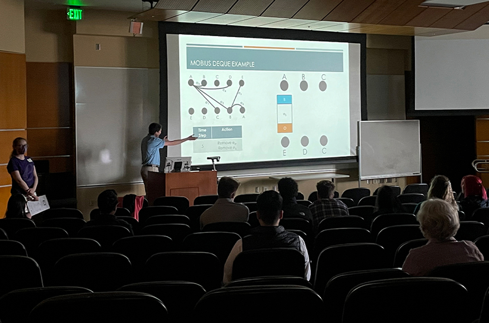

Luke Martin
Computer Science Major
Mathematics Major
Personal Summary
I am a student at Gonzaga University majoring in computer science and mathematics. I grew up on a wheat and cattle ranch outside of Rufus, OR. Hardwork and commitment are two values very important to me. I am on track to graduate with my BS in computer science in June 2023, and with my BS in mathematics in August 2023. As of right now, I plan to persue graduate studies in math with the ultimate goal of obtaining a PhD. My passion for math developed in my research experience at Gonzaga and during my REU in the summer of 2022. However, I also have interests in working in consulting for software development. I believe that my strong mathematical reasoning and programming skills will allow me to be successful beyond my undergraduate studies.
Core Skills
-
Programming Languages
- Python
- Java
- C++
- C
- Database Management
- Microsoft Office
- Mathematical/Logical Reasoning
-
Advanced Knowledge in Fields of Math
- Abstract Algebra
- Linear Algebra
- Combinatorics
- Graph Theory
-
Soft Skills
- Communication
- Writing Abilities
- Adaptability
- Work Ethic
Career
Work Experience
| Job Title | Employer | Dates | Responsibilities |
|---|---|---|---|
| Math Tutor | Gonzaga University Math Department | September 2021 - Present |
|
| Math Research | Gonzaga University Math Department | November 2021 - Present |
|
| Math REU Participant | Texas State University Math Department | June 2022 - August 2022 |
|
Research
Publications
- Möbius Book Embeddings, Nicholas Linthacum, Luke Martin, Thomas McKenzie, Shannon Overbay, and Line Ai Tan, 2022 (Submitted).
- Classifying Solvable Primitive Permutation Groups of Low Rank, Mallory Dolorfino, Luke Martin, Zachary Slonim, Yuxuan Sun, and Yong Yang, 2022 (Submitted).
- On the Characterization of Sporadic Simple Groups by Codegrees, Mallory Dolorfino, Luke Martin, Zachary Slonim, Yuxuan Sun, and Yong Yang, 2022 (In Progress).
- On the Book Thickness of Total Graphs of Commutative Rings, Mallory Dolorfino, Luke Martin, Zachary Slonim, Yuxuan Sun, and Yong Yang, 2022 (In Progress).
Talks
- Möbius Book Embeddings and Applications, 2022 Pacific Inland Mathematics undergraduate conference (PiMUC), Washington State University, Pullman, WA, April 9, 2022.
- Möbius Book Embeddings and Applications, 53rd Southeastern International Conference on Combinatorics, Graph Theory and Computing, Florida Atlantic University, Boca Raton, FL (Virtual), March 7-11, 2022.
Posters
- Möbius Book Embeddings, Nicholas Linthacum, Luke Martin, Thomas McKenzie, Shannon Overbay, and Line Ai Tan, 2022.
- On the Characterization of Alternating Groups by Codegrees, Mallory Dolorfino, Luke Martin, Zachary Slonim, Yuxuan Sun, and Yong Yang, 2022.
Education and Qualifications
| School | Location | Dates | Studies/Degrees/Relevant Courses |
|---|---|---|---|
| Gonzaga University | Spokane, WA | August 2019 - Present |
|
| Columbia Gorge Community College | The Dalles, OR | September 2018 - June 2019 |
|
| Sherman County High School | Moro, OR | September 2018 - June 2019 |
|
| Name | Date Received | Description |
|---|---|---|
| Fundamentals of Coaching | December 13, 2019 | NFHS certification for the basics of coaching in high school athletics |
| Heat Illness Prevention | December 12, 2019 | NFHS certification for preventing heat illness in high school athletes during sports practices and games |
| Concussion in Sports | May 7, 2021 | NFHS certification for preventing, identifying, and handling student-athletes with concussions in high school sports |
Interests and Hobbies
-
Research in mathematics
 -
Coaching basketball

-
Running